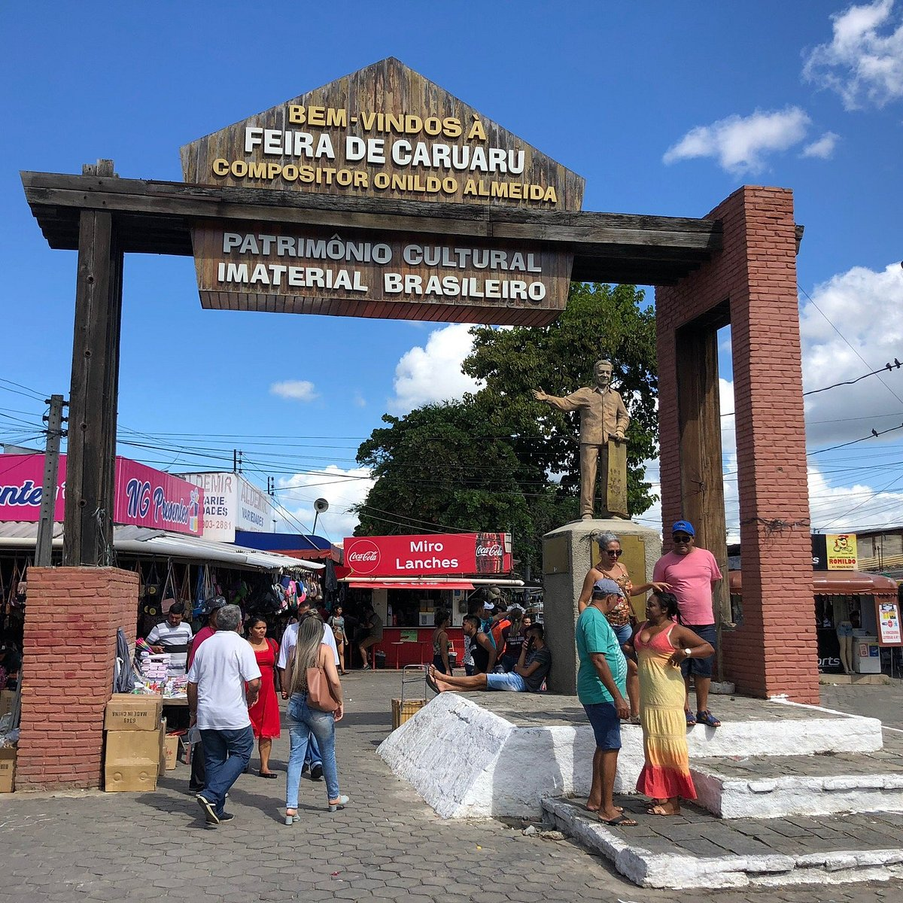
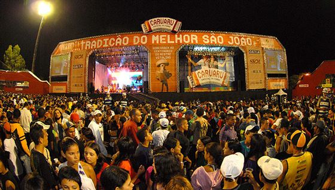

CARUARU
Caruaru abriga cerca de 365 mil habitantes e tem como principal atividade econômica o Comércio e Serviços, seguido da Indústria, com destaque para o setor de confecções. Caruaru representa a 1ª economia das cidades do interior de Pernambuco e a 6ª maior economia do estado.
São João de Caruaru
O São João de Caruaru, em Pernambuco, é nacionalmente conhecido por ser uma das maiores e melhores comemorações juninas do país. E verdade seja dita: as celebrações fazem por merecer a boa fama que ostentam.
